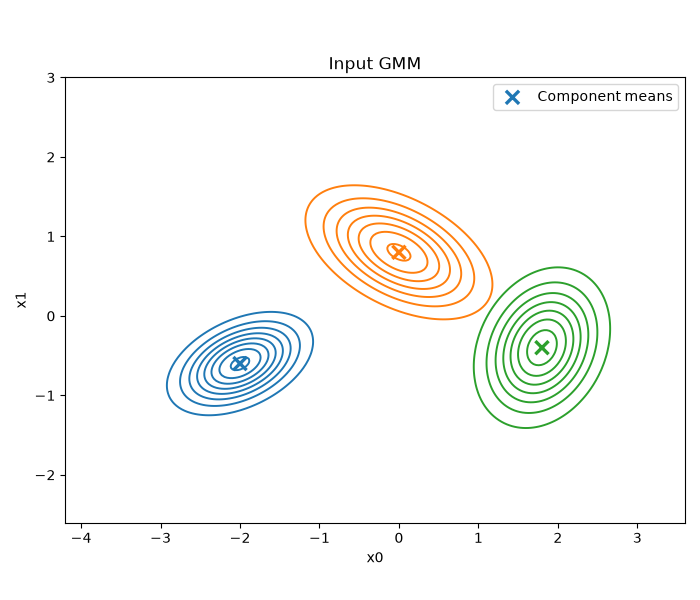
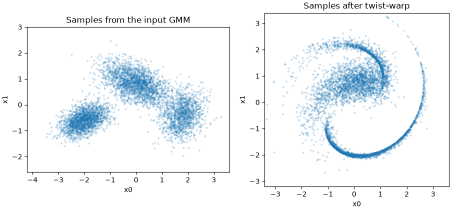
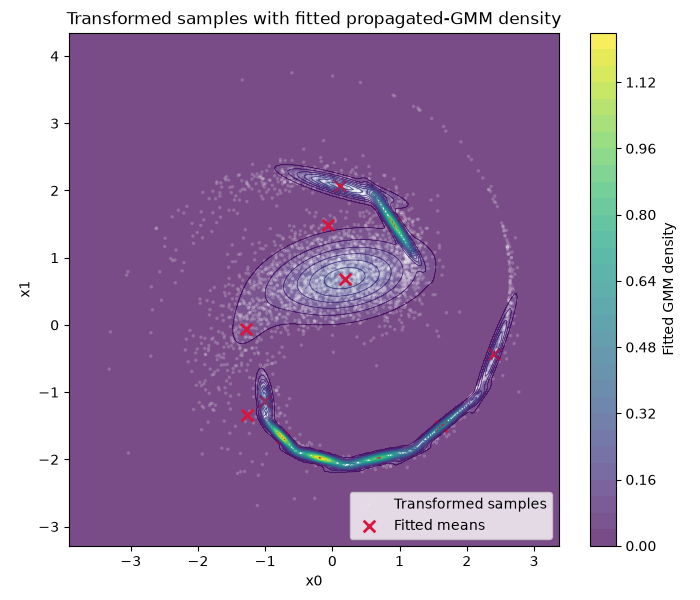
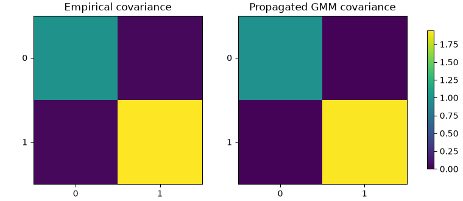

Note
Go to the end to download the full example code.
Nonlinear GMM Propagation#
This example propagates a two-dimensional Gaussian mixture through a nonlinear function.
The output distribution is not available in closed form, so propagate_gmm samples
from the input mixture, applies the function, and fits a new Gaussian mixture to the
transformed samples.
import matplotlib.pyplot as plt
import torch
from _plotting import plot_2d_gmm, plot_samples_with_gmm_contours
from gmtorch import GaussianMixture
from gmtorch.propagation import propagate_gmm
N_COMPONENTS = 3
DIM = 2
PREVIEW_SAMPLES = 5_000
FIT_SAMPLES = 40_000
TARGET_COMPONENTS = 12
DTYPE = torch.float64
1. Build the input mixture#
The input GMM has three separated elliptical components. This makes it easy to see how the nonlinear map bends different regions of the input distribution.
weights = torch.tensor([0.35, 0.40, 0.25], dtype=DTYPE)
means = torch.tensor(
[
[-2.0, -0.6],
[0.0, 0.8],
[1.8, -0.4],
],
dtype=DTYPE,
)
covariances = torch.tensor(
[
[[0.20, 0.06], [0.06, 0.10]],
[[0.35, -0.12], [-0.12, 0.18]],
[[0.18, 0.05], [0.05, 0.25]],
],
dtype=DTYPE,
)
input_gmm = GaussianMixture(
n_components=N_COMPONENTS,
dim=DIM,
weights=weights,
means=means,
covariances=covariances,
)
ax = plot_2d_gmm(input_gmm)
ax.set(title="Input GMM", xlim=(-4.2, 3.6), ylim=(-2.6, 3.0))

[Text(0.5, 1.0, 'Input GMM'), (-4.2, 3.6), (-2.6, 3.0)]
2. Define the nonlinear map#
twist_warp rotates each point by an angle proportional to its squared radius and
then adds small sinusoidal coordinate-wise warps. It accepts a batch of samples with
shape (n_samples, 2) and returns another batch with shape (n_samples, 2).
def twist_warp(samples: torch.Tensor) -> torch.Tensor:
"""Apply a radius-dependent twist plus sinusoidal warp to 2D samples."""
x = samples[:, 0]
y = samples[:, 1]
radius_squared = x.square() + y.square()
angle = 0.35 * radius_squared
cosine = torch.cos(angle)
sine = torch.sin(angle)
rotated_x = cosine * x - sine * y
rotated_y = sine * x + cosine * y
u = rotated_x + 0.25 * torch.sin(2.0 * y)
v = rotated_y + 0.20 * torch.sin(1.5 * x)
return torch.stack((u, v), dim=1)
3. Preview transformed samples#
A preview sample shows the empirical pushforward distribution before fitting a GMM to
it. The curved sample cloud is the distribution that propagate_gmm will
approximate.
source_samples = input_gmm.sample(PREVIEW_SAMPLES, seed=202)
transformed_samples = twist_warp(source_samples)
print(f"Source sample shape: {tuple(source_samples.shape)}")
print(f"Transformed sample shape: {tuple(transformed_samples.shape)}")
fig, axes = plt.subplots(1, 2, figsize=(9.2, 4.2), constrained_layout=True)
sample_panels = (
("Samples from the input GMM", source_samples.detach().cpu(), (-4.2, 3.6), (-2.6, 3.0)),
("Samples after twist-warp", transformed_samples.detach().cpu(), (-3.4, 3.6), (-3.2, 3.4)),
)
for ax, (title, samples, x_limits, y_limits) in zip(axes, sample_panels, strict=True):
ax.scatter(
samples[:, 0].numpy(),
samples[:, 1].numpy(),
s=8,
alpha=0.25,
edgecolors="none",
)
ax.set(xlim=x_limits, ylim=y_limits, xlabel="x0", ylabel="x1", title=title)
ax.set_aspect("equal", adjustable="box")

Source sample shape: (5000, 2)
Transformed sample shape: (5000, 2)
4. Fit the propagated approximation#
propagate_gmm owns the full approximation pipeline. sample_seed controls the
samples drawn from input_gmm. The seed inside fit_kwargs controls the EM
initialization used to fit the output mixture.
fit_kwargs = {
"init_method": "random_from_data",
"n_init": 3,
"max_iter": 80,
"tol": 1e-5,
"reg_covar": 1e-5,
"seed": 123,
"dtype": DTYPE,
}
propagated_gmm = propagate_gmm(
input_gmm,
twist_warp,
n_samples=FIT_SAMPLES,
target_k=TARGET_COMPONENTS,
fit_kwargs=fit_kwargs,
sample_seed=42,
)
print(f"Propagated components: {propagated_gmm.n_components}")
print("Propagated weights:")
print(propagated_gmm.weights)
Propagated components: 12
Propagated weights:
tensor([0.0733, 0.0996, 0.0406, 0.0146, 0.0376, 0.0802, 0.0276, 0.3717, 0.0768,
0.0512, 0.0704, 0.0563], dtype=torch.float64)
5. Inspect the propagated GMM#
The fitted mixture is not a closed-form transform of the input components. Its components are learned from transformed samples.
ax = plot_samples_with_gmm_contours(
transformed_samples,
propagated_gmm,
title="Transformed samples with fitted propagated-GMM density",
)

6. Check empirical moments#
Matching moments is not the EM objective, but the propagated GMM should roughly agree with the transformed sample cloud.
sample_mean = transformed_samples.mean(dim=0)
centered_samples = transformed_samples - sample_mean
sample_covariance = centered_samples.mT @ centered_samples / (transformed_samples.shape[0] - 1)
gmm_mean = propagated_gmm.expectation()
gmm_covariance = propagated_gmm.covariance()
print("Empirical transformed mean:")
print(sample_mean)
print("\nPropagated GMM mean:")
print(gmm_mean)
print("\nEmpirical transformed covariance:")
print(sample_covariance)
print("\nPropagated GMM covariance:")
print(gmm_covariance)
fig, axes = plt.subplots(1, 2, figsize=(7.6, 3.3), constrained_layout=True)
moment_panels = (
("Empirical covariance", sample_covariance),
("Propagated GMM covariance", gmm_covariance),
)
color_limit = float(torch.stack((sample_covariance.abs(), gmm_covariance.abs())).max().item())
for ax, (title, covariance) in zip(axes, moment_panels, strict=True):
image = ax.imshow(covariance.detach().cpu().numpy(), vmin=0.0, vmax=color_limit, cmap="viridis")
ax.set_title(title)
ax.set_xticks([0, 1])
ax.set_yticks([0, 1])
fig.colorbar(image, ax=axes, shrink=0.82)

Empirical transformed mean:
tensor([0.2416, 0.0927], dtype=torch.float64)
Propagated GMM mean:
tensor([0.2267, 0.1213], dtype=torch.float64)
Empirical transformed covariance:
tensor([[0.9904, 0.0448],
[0.0448, 1.9400]], dtype=torch.float64)
Propagated GMM covariance:
tensor([[0.9851, 0.0182],
[0.0182, 1.9301]], dtype=torch.float64)
<matplotlib.colorbar.Colorbar object at 0x7545210cb4a0>
Total running time of the script: (0 minutes 9.165 seconds)